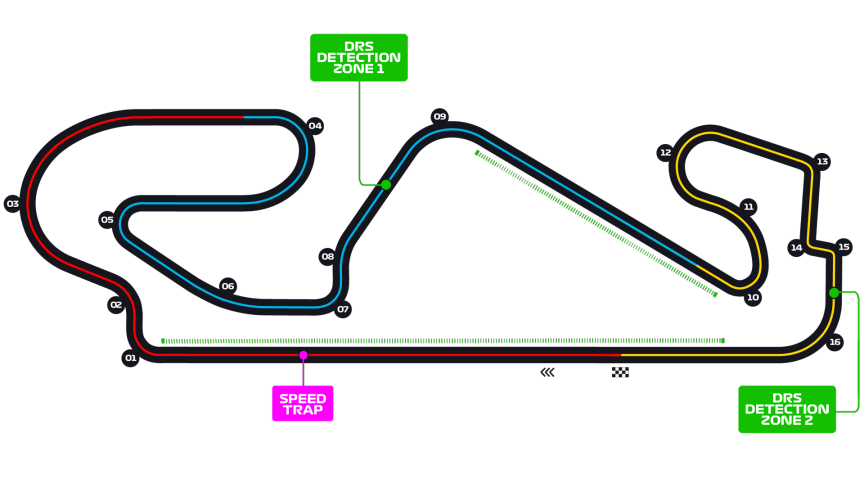

Grand Prix d'Espagne
Informations
Nom du circuit
Circuit de Barcelona-Catalunya
Lieu
Montmelò (Espagne)
Nombre de tours
66
Longueur du circuit
4.675 km
Distance de course
308.424 km
Dernier vainqueur
Max Verstappen
Classement nombres de victoires sur ce circuit
6 victoires - Lewis Hamilton
6 victoires - Michael Schumacher
3 victoires - Mika Häkkinen
Le saviez-vous ?
En 2016, le pilote Max Verstappen réalisa un exploit. Il a gagné la course, pour son premier GP avec sa nouvelle écurie RedBull et devint surtout par la même occasion le plus jeune vainqueur d'un GP à l'âge de 18 ans.
Le circuit fait face à de grandes difficultés financières avec notamment une perte de 50,5 millions d'euros sur la période entre 2009 et 2018.
Lors de l'édition 2006, Fernando Alonso devint le premier pilote espagnol à s'imposer devant son public.
C'est également le premier Grand Prix que je suis allé voir de ma vie !